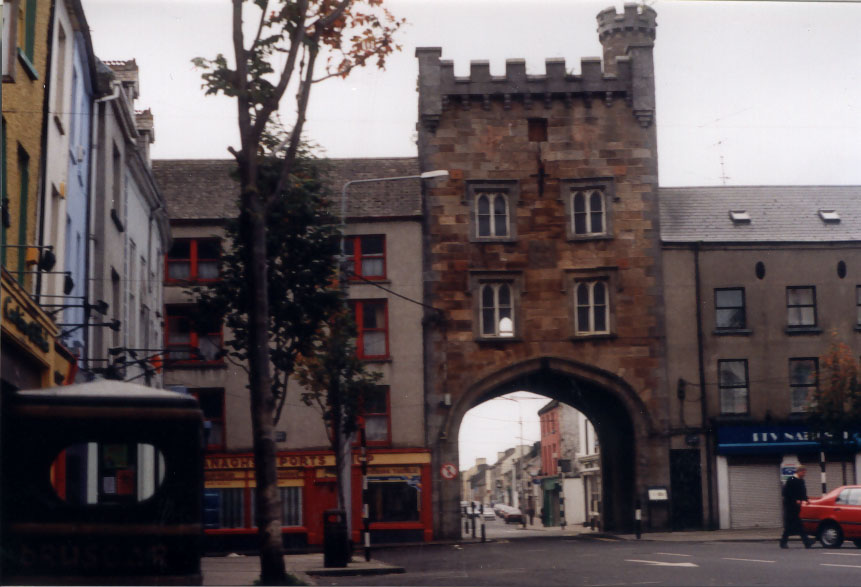

Places to see in Clonmel.
Page Title

Clonmel is a medevil town situated on the Suir, with the Comeragh
Mountains to the South and Slievenamon to the East. The Suir has been a major influence on
town's development, a fact reflected in the town crest showing a bridge across a river with
three fish underneath.
Tourism in Clonmel featuring the best places to stay in Clonmel, a detailed hertitage trail
and a list of interesting activities, this section will give a taste of Clonmel to both National and
International audience. If you wish to go hill walking, fishing or cycling we will tell you when and
where to g.
© 2004 Places to see in Clonmel.
I